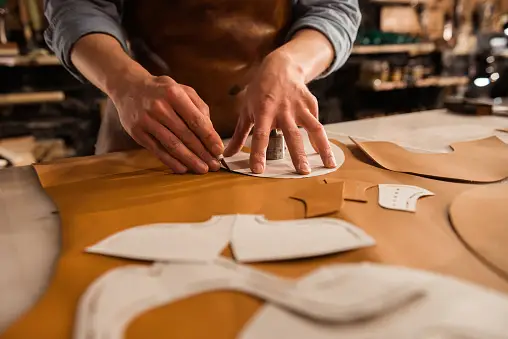

This project stood out due to its diverse customer base, attracting clients from around the globe, including Portugal, the United States, and beyond.
Through our thorough analysis and visualization, we uncovered a significant churn rate among these customers.
Our recommendations proved instrumental in enabling the resort to slash its churn rate by an impressive 10%.
This Analysis was performed using Microsoft Excel

ElectroniX inc. company approached us in response to challenges posed by increased competition
and shifting consumer preferences; to address these, we conducted an internal analysis
utilizing provided data, employing slicers to segment the dashboard by country and focusing on
crucial metrics including Sum of Revenue, Sum of Quantity Sold, and Customer Count

Strides Styles, a leading footwear manufacturer with both online and in-store operations, tasked us with reviewing
their processes and identifying bottlenecks. To enhance efficiency, we built an interractive dashboard and filtered it by product
to gain valuable insights from the current sales data.

Jumia-Tech is a major supplier of consumer hardware devices, including laptops, tablets, printers, monitors, and cables. They also operate
an online store where customers can purchase items for home delivery or in-store pickup. Additionally, they offer Tech Support Services.
During the Covid-19 pandemic, they tasked us with developing new process steps to address Jumia-Tech’s online purchase in-store pickup process
and their tech support process, considering the social distancing requirements.

Tech Haven Electronics began as a small electronics store and has since expanded to multiple locations, offering a wide range of electronic
products and services. Over the years, they have built a reputation for excellent customer service and competitive pricing. Like many businesses
in the electronics industry, Tech Haven Electronics faces both challenges and opportunities. To thrive in the rapidly changing market, the company
must adapt to shifting consumer preferences, embrace e-commerce, and focus on sustainability. As Business Analysts, we were tasked with identifying
key areas where the business can improve. To achieve this, we need to gather information on specific aspects of the business.